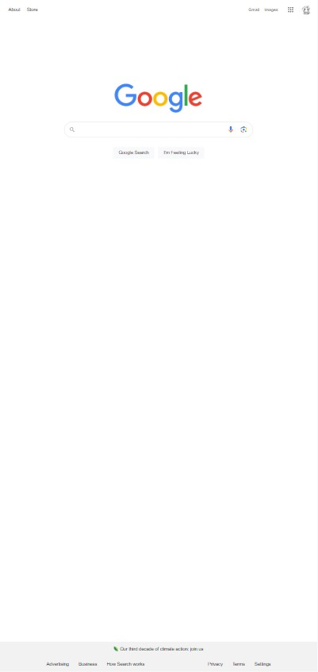
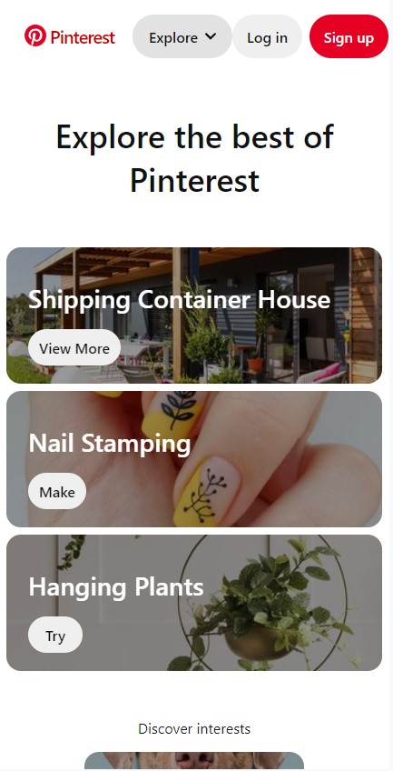

Website: Google

Description: Googles's mobile page follows Hick's Law by organizing content in a way that minimizes choices and enhances user decision-making efficiency.
Website: Amazon
Description: Amazon's mobile interface adheres to Fitt's Law by placing frequently used elements in easily accessible areas, optimizing user interaction.
Website: Pinterest

Description: Pinterest's mobile design embraces the Rule of Thirds, creating visual interest and balance by aligning key elements along the imaginary grid lines.